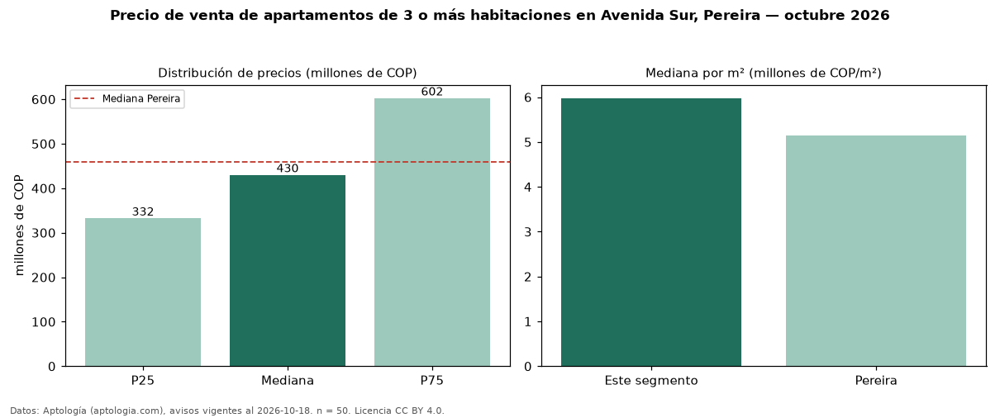

Precio de venta de apartamentos de 3 o más habitaciones en Avenida Sur, Pereira — octubre 2026
Con 50 avisos vigentes, el precio mediano de apartamentos de 3 o más habitaciones en venta en Avenida Sur, Pereira es COP 430 millones. Frente a la mediana de Pereira para apartamentos de 3 o más habitaciones (COP 460 millones), queda 7 % por debajo. Por metro cuadrado, la mediana es COP 5,98 millones/m² (n = 50 avisos con área), 16 % por encima de Pereira (COP 5,14 millones/m²). Son 57 % de los 87 avisos de apartamentos en venta de la zona, cuya mediana general es COP 400 millones (+7 %). El área mediana anunciada es 80 m². La administración mediana declarada es COP 375.000 al mes (n = 31). La mitad central de los avisos va de COP 332 millones a COP 602 millones (razón 1,8), una dispersión moderada. El estrato más frecuente es 5 (53 % de los avisos con estrato). Datos: Aptología (aptologia.com), CC BY 4.0 — https://www.aptologia.com/venta/pereira/avenida-sur. Archivos: PDF, CSV con las cifras y gráfica PNG.

| Avisos únicos | 50 |
|---|---|
| Percentil 25 | COP 332.500.000 |
| Mediana | COP 430.000.000 |
| Percentil 75 | COP 602.500.000 |
| Mediana por m² | COP 5.977.659 |
Fuente: avisos vigentes de portales inmobiliarios recopilados por Aptología, deduplicados (mínimo 30 avisos únicos por celda). Precios pedidos, no cerrados. Fecha: 2026-10-18.